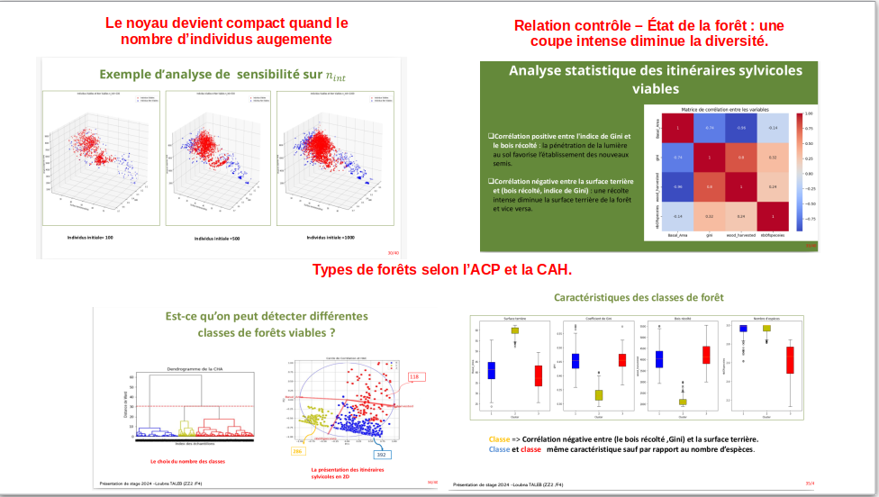
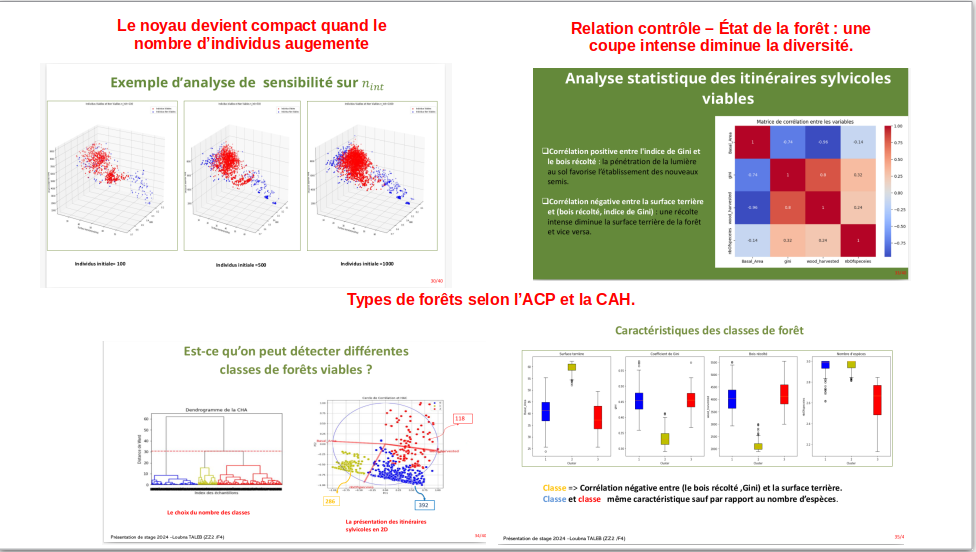

I am Loubna Taleb
Data Science and Robotics Engineer – Specialized in optimization, and computer vision
ISIMA – Clermont-Ferrand (2022–2025)
Engineering School in Computer Science – Specialization in Optimization and AI
GPA: 15/20 (Very Good)
EUPI – Clermont-Ferrand (2024–2025)
Master’s Degree in Robotics and Artificial Perception (Double degree)
GPA: 15/20 (Very Good)
CPGE – Morocco, Meknes & Marrakech (2020–2022)
Preparatory Classes for Engineering Schools (PCSI/PSI*)
- PCSI: Ranked among the top students, admitted to PSI* at Ibn Timiya in Marrakech
- PSI*: Admitted to ISIMA through the CCINP national entrance exam
- Also admitted to EMI (Military School of Engineering, Morocco) with a national ranking of 17/910
Baccalaureate – Morocco, ZAIO (2020)
Scientific Baccalaureate in Physics and Chemistry
National GPA: 17.55/20
Internship – Optimization of Drone Inspections in Energy Facilities
TotalEnergies – April 2025 to September 2025, Pau, France
- Developed automatic mission planning algorithms for drone inspection of georeferenced energy facilities.
- Designed internal software interfaces to facilitate mission preparation and export of KMZ files compatible with DJI drones.
- Implemented intelligent planning algorithms (A*, TSP) to maximize drone autonomy.
- Tools: Python, QGIS, Git, CloudCompare, A*, TSP
- Recognition: Commended by the evaluation committee


Internship – Modeling and Machine Learning
INRAE – March 2024 to August 2024, Clermont-Ferrand, France
- Developed a decision-support tool for forest management under climate change.
- Applied genetic algorithms in Java for silvicultural optimization.
- Conducted predictive modeling in Python for ecological simulations to support sustainable management.
- Tools: Java, Python, PyTorch, Git
- Recognition: Very good evaluation
- 📄 View presentation (PDF)
- 💻 Access INRAE project code on GitHub
 

SafeWay – Sopra Steria Hackathon, October 2024
Development of a team web project to find the safest routes for pedestrians based on different user profiles: women, men, disabled people, elderly, etc., using user feedback and city data from Clermont-Ferrand.
My role included:
- Developing Dijkstra heuristics to find the safest and shortest paths with an alpha parameter to balance safety and distance.
- Creating the graph structure for shortest-path calculations.
- Designing the first web interface to collect and store user and city data.
Results:
- 1st place for communication
- 2nd place for coding part
Mushroom Image Classification Project
The goal of this project was to classify a mushroom dataset into three classes: amanita, oyster, and crimini. We started by visually analyzing the images to understand their characteristics and determine the most suitable neural network for the task. We also reviewed scientific papers on image classification with various dimensions.
Based on this research, we tested two pretrained neural network models and adapted them to our dataset. The first model, Inception-V3, achieved excellent results with 95% accuracy on the test set and 99% on the training set. The second model, VGG-16, produced disappointing results and was abandoned.
A major challenge was the limitation of Google Colab’s GPU training time (2 hours). To overcome this, we created multiple Colab environments. CPU training was very slow, with one epoch taking over 10 minutes. Despite these constraints, we successfully optimized and validated the Inception model, which showed promising performance for our classification task.